Projects
-
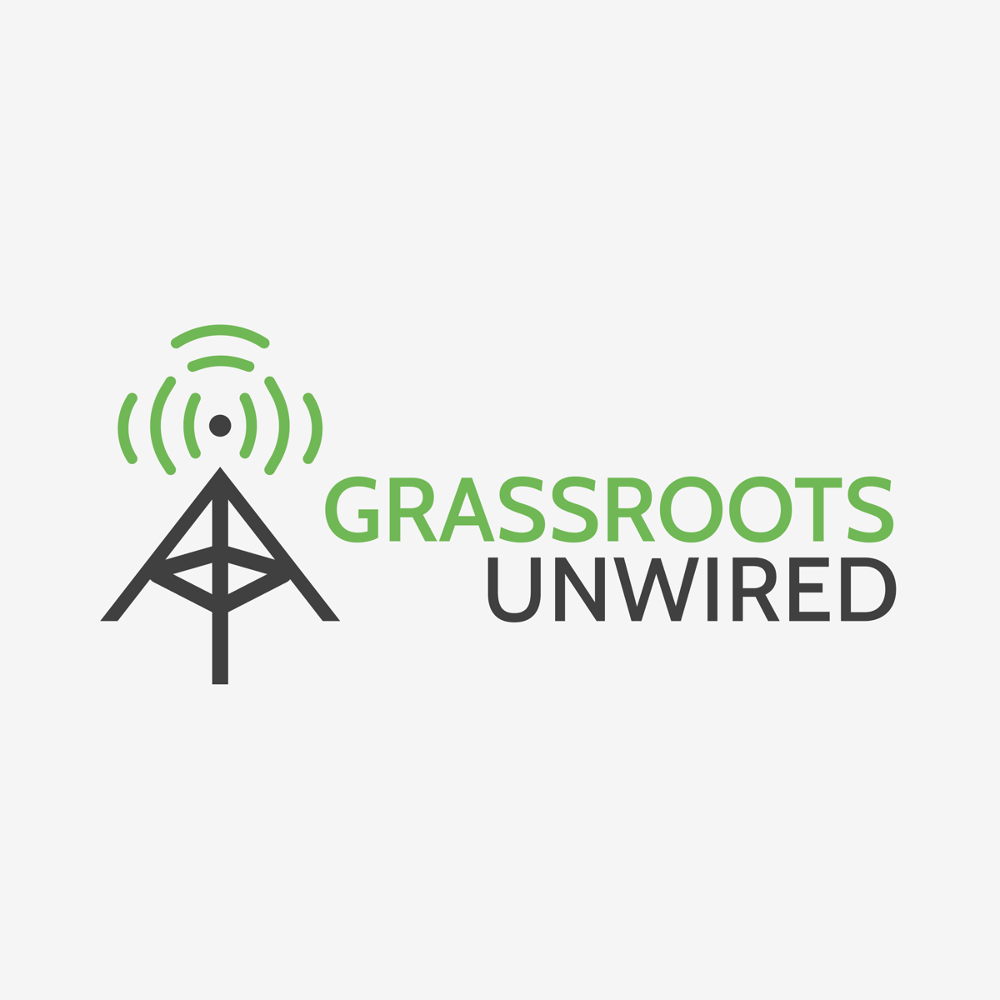
Grassroots Unwired
A mobile-first canvassing experience for the field.
Redesigning field data collection for canvassers working in fast-paced, real-world conditions.
Overview
Grassroots Unwired is a platform canvassing teams use to collect data, manage outreach, and track engagement in the field. I redesigned the canvassing experience with a mobile-first approach, so it works for people moving quickly through real-world environments.
The problem
Canvassers move fast and talk to people face to face. The existing interface got in the way, with unclear navigation, dense layouts, and slow data entry. That led to:
- Slower interactions during conversations
- More input errors
- Difficulty switching between tasks in the moment
Users and constraints
Canvassers use the app on their phones, mid-conversation. Campaign managers depend on the structured data those canvassers collect, so it has to be accurate. The design had to hold up under a few constraints:
- Mobile-first use in changing environments
- Time-sensitive interactions that demand speed and clarity
- High-volume data entry during conversations
- Clear structure across complex workflows
Design approach
- Streamlined navigation to reduce cognitive load
- A clearer hierarchy that puts primary actions and information first
- Quick, one-handed interaction
- Less friction in data entry and task completion
Visual system
I defined typography, color usage, and component styles so the interface reads clearly and can scale as the product grows.
The style guide: typography, color, and core components. Redesigned dashboard
The dashboard now leads with the information and actions people need most, so they can see their tasks and get around the app at a glance. It has a clearer content hierarchy, less visual clutter, more accessible primary actions, and better readability on small screens.
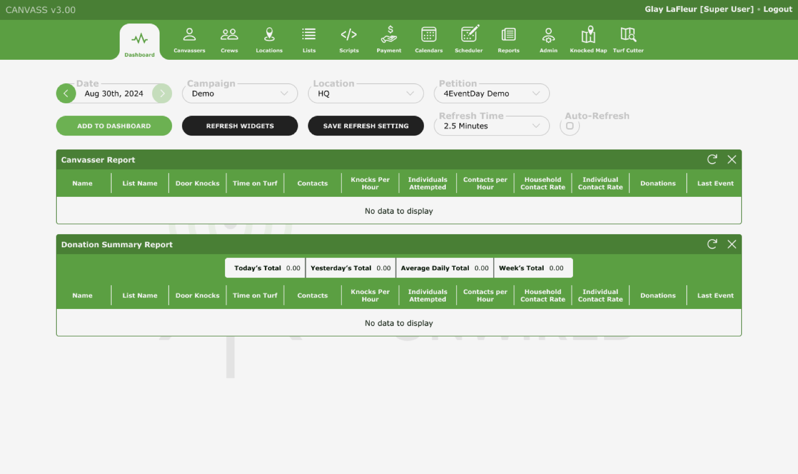
The redesigned dashboard. Before and after
The original dashboard packed information together, which made key actions hard to spot. The new version simplifies the layout and emphasizes structure, clarity, and ease of use.
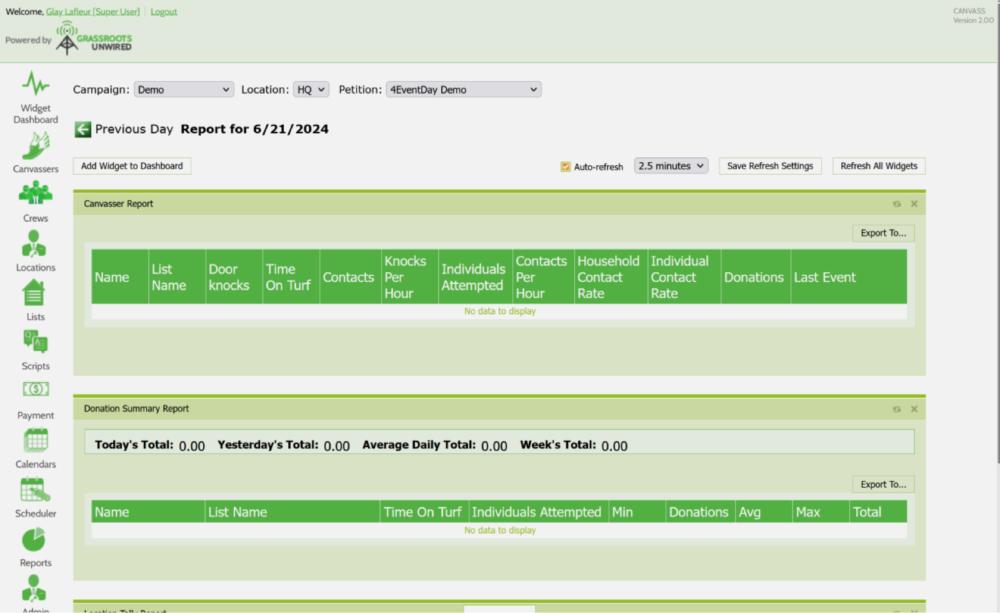
The original dashboard, for comparison. Outcome
- Less friction during live conversations
- Faster navigation and data entry
- Clearer screens in high-pressure situations
- A more consistent, scalable interface
Reflection
This project taught me to design for real-world conditions rather than ideal ones. In time-sensitive mobile contexts, clarity, hierarchy, and interaction efficiency matter most. With another iteration, I would bring in direct user feedback and usability testing to validate and refine these changes.
-
Minecraft Meets Baldur's Gate
Serious weapons for a not-so-serious game.
Translating Baldur's Gate 3 weapons into hand-painted, block-built Minecraft models.
Overview
A collection of 3D models built in BlockBench and inspired by iconic weapons from Baldur's Gate 3. Each one is a stylized interpretation of its in-game counterpart that embraces Minecraft's blocky look.
Reference and approach
I began by gathering visual references from in-game screenshots and online wikis, studying the silhouette, color palette, and key features of each weapon. BlockBench is a low-poly, cube-based tool, so I had to find creative ways to simplify complex shapes while keeping the essence of each weapon.
Markoheshkir, built in BlockBench beside its reference art. Part of this work's copyright is owned by Larian Studios and is used under the Larian Fan Content Policy. Blocking out and detail
I blocked out each model with basic forms to get the proportions right, then refined the details and added depth with subtle layering and, where supported, creative use of transparency. I leaned into stylized exaggeration for readability, especially on smaller models like Crimson Mischief.
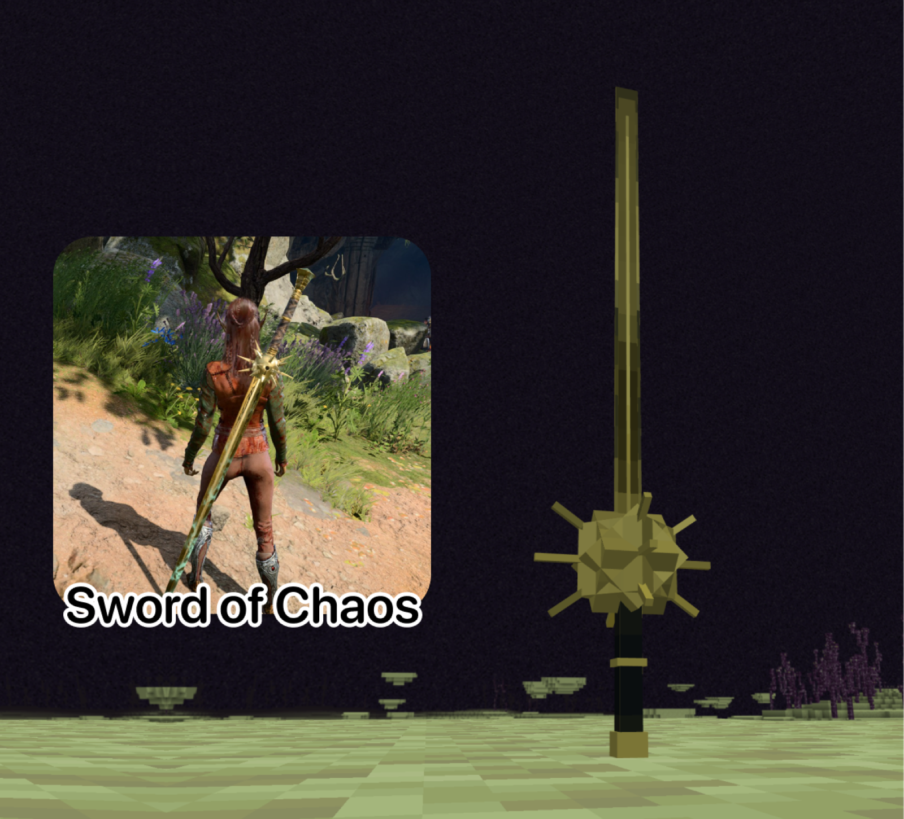
The Sword of Chaos. Reference image from bg3.wiki, uploaded by ShadowOake. Texturing
I painted the textures by hand directly in BlockBench, using custom palettes that capture each weapon's personality.
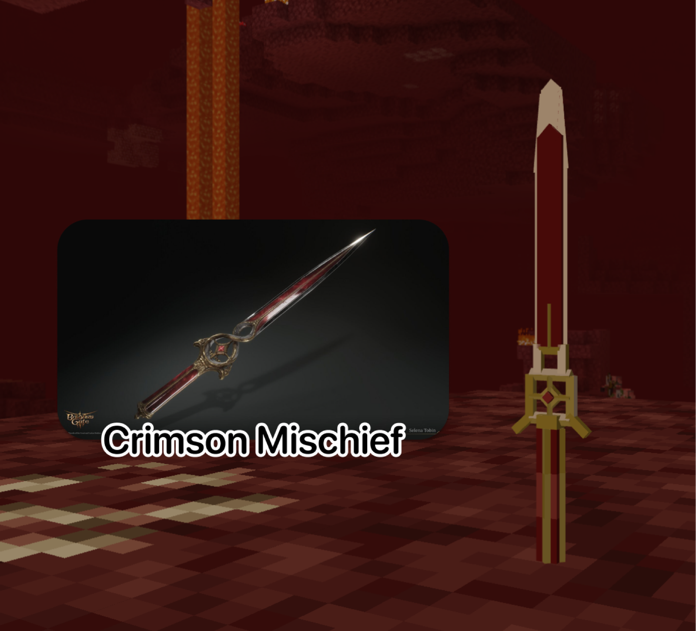
A mace in the End, with its in-game reference. Part of this work's copyright is owned by Larian Studios and is used under the Larian Fan Content Policy. 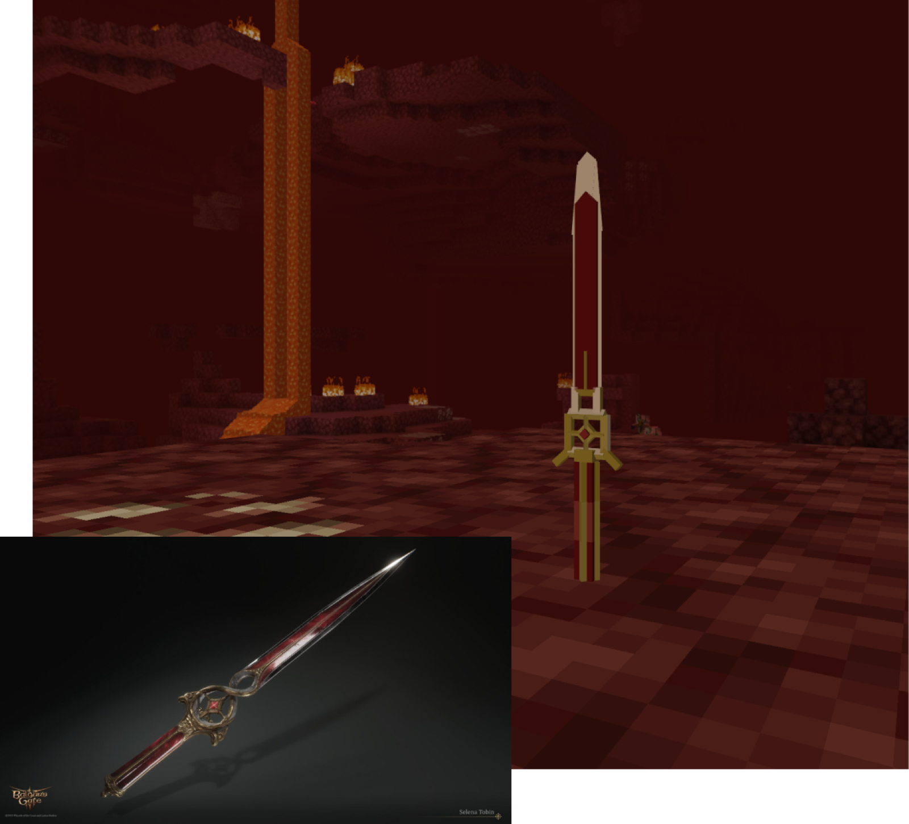
Crimson Mischief in the Nether, with its reference art. Reflection
Throughout, I balanced fidelity to the original game with creative interpretation. The goal was never an exact copy. It was to translate these legendary weapons into a form that feels at home in a fantasy RPG Minecraft mod.
-
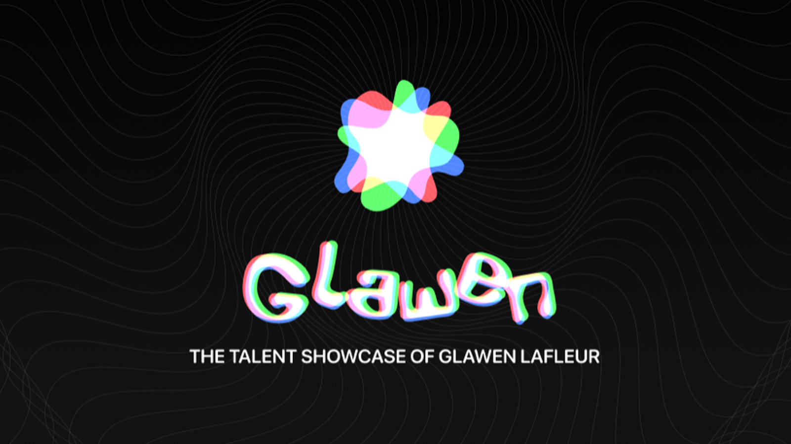
Portfolio, 2024
A previous portfolio, built around blended color.
A colorful, playful portfolio that balances professionalism with fun.
Overview
I have redesigned my portfolio more times than I can count. Part of that is an inability to sit still, and part is a perfectionist's attention to detail on projects I care about. For this version I wanted a mix of professionalism and fun, so I chose a much lighter and more colorful theme than earlier iterations.
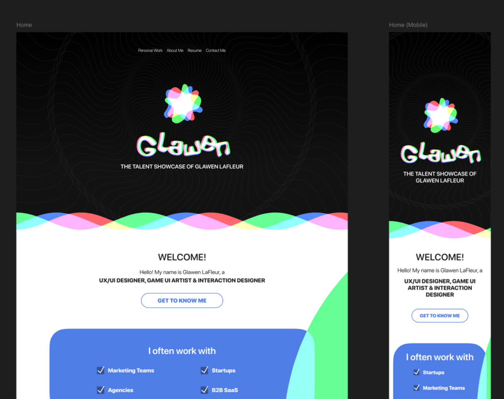
The final home page concepts, desktop and mobile. Screen blending
While exploring concepts, I got hooked on the CSS mix-blend-mode property. It allows stylization that used to require rasterized images. With the "screen" value and RGB shapes, I could blend colors into white.
The screen blending technique. I used the technique on the "blob" and the sinewaves that run across the home page.
A rounded menu
On mobile, a plain three-line hamburger icon didn't sit right with the rounded font and shapes used across the site. After trying different forms, I landed on tapered, rounded bars for the menu and a matching close icon.
Original buttons above, redesigned buttons below. -

Ginkgo Bioworks
A phishing-savvy dino for Cybersecurity Week.
Logo design for Ginkgo Bioworks' Cybersecurity Awareness Week 2023.
Overview
I designed the logo for Ginkgo Bioworks' Cybersecurity Awareness Week in 2023. The goal was a friendly mascot that makes a dry topic approachable and gives the week a recognizable face.
The Cyber Security Dino
The dino sits at a desk in a company cap with a coffee mug, looking suspiciously at a fish dangling from a hook on its monitor. It is a playful nod to phishing, and it reuses the Ginkgo brand's greens so it feels part of the company.
The Cyber Security Dino. -
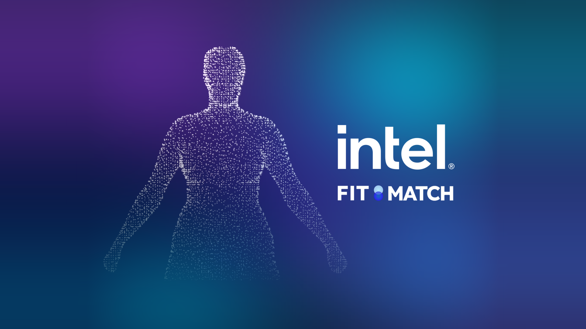
Intel 3D Fitting Room
Body scanning tech to find your fit.
A futuristic interface built to show off FitMatch body scanning on the Intel Innovation 2023 keynote stage.
Overview
I designed this interface to showcase FitMatch body scanning technology at the Intel Innovation 2023 Keynote. During the keynote, CEO Pat Gelsinger did a live demo of the product. It was one of the most exciting projects I've worked on, knowing it would be shown at such a large event and livestreamed to a combined 28K viewers.
See it in action
Pat's walkthrough begins at 1:13:30 in the keynote recording. Below are a few screens from the software. Everything was designed to feel futuristic while staying easy to follow on stage.
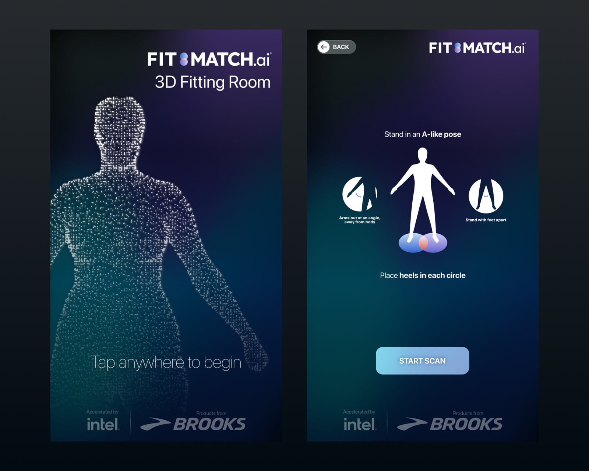
Welcome (left) and Begin Scan (right). 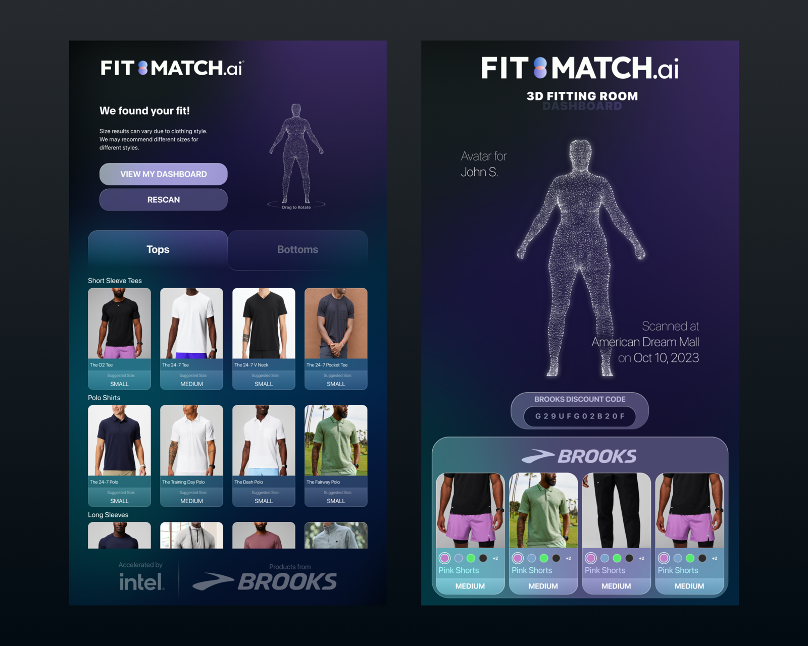
Found your fit (left) and Dashboard (right). -
Lunar Drift
A brief crack at video game UI.
A space-themed game interface where the UI builds the atmosphere.
Overview
I've always wanted to work in game development. When I first thought about it, I assumed I'd be working on game design and storytelling, and it turns out UI has a huge impact on both. A game's UI can be a complete game-changer (pun intended) for atmosphere and immersion. I wanted to capture that in the design for this space-themed game.
Splash screen
First I needed a typeface that felt space-age but stayed simple to read. From there I created the game's logo and customized the letters in "DRIFT" so they look like they're glitching.
The splash screen. Title screen
I wanted the buttons to resemble an old-school monitor, scan lines and all, and added a glow so they feel back-lit. The background still felt plain, so I carried the scan lines across the full screen on the splash and title screens to set the mood.
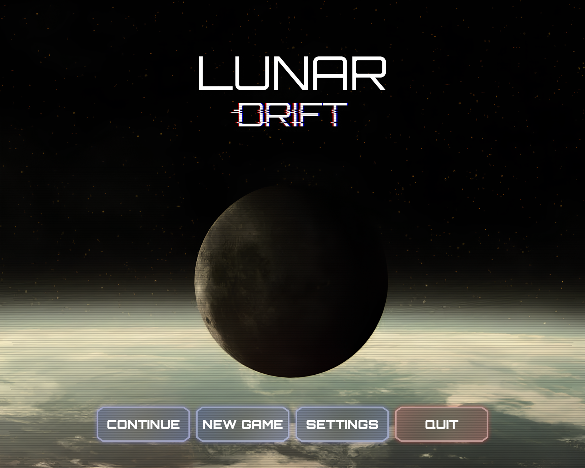
The title screen. In-game UI
In game, curved segmented gauges frame the view on either side, tracking health, oxygen, and other stats without covering the scene. As a stat decays, its segments empty and shift color so players can read their state at a glance.
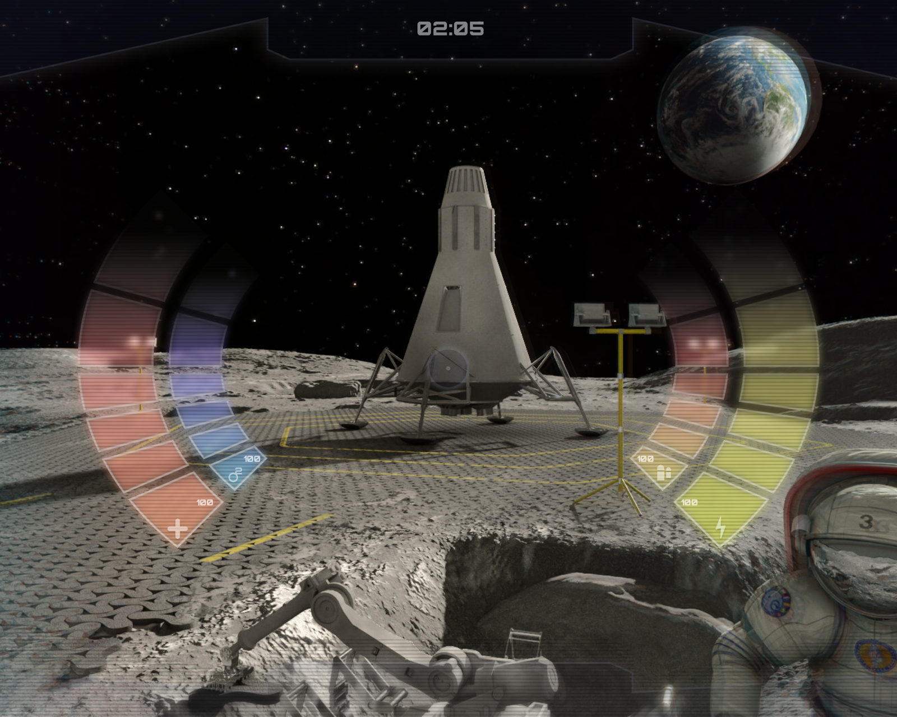
The in-game UI. 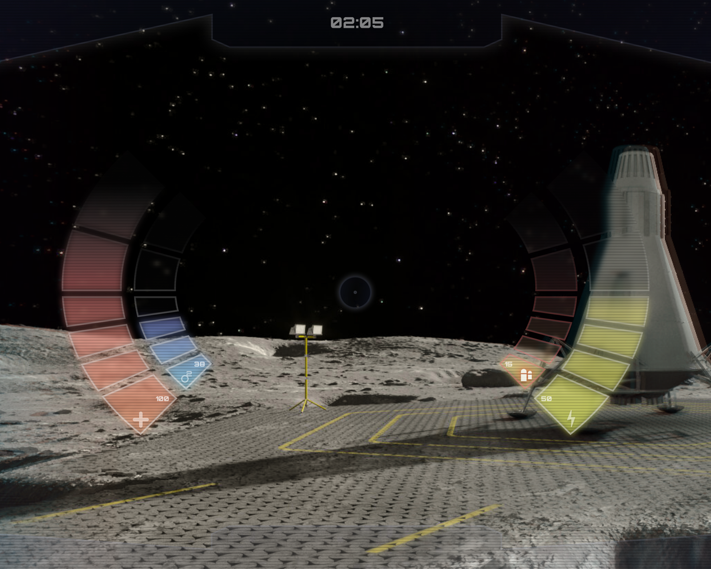
The in-game UI, with decay on stats. -
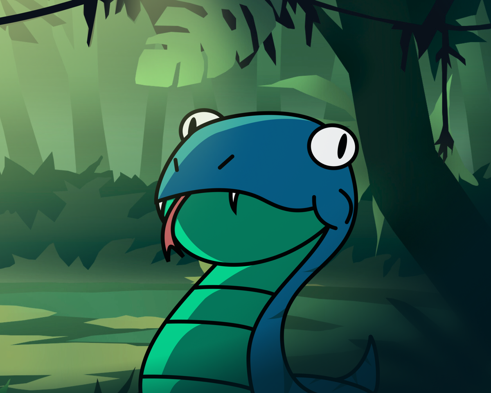
Syphers Gaming
Branding for a Discord community that lightened up.
A playful rebrand for a gaming community moving from competitive to casual.
The brief
This Discord community reached out as they were shifting from a serious, competitive gaming group to a more relaxed place to hang out and play. They wanted branding that reflected that change in values. The original logo and style, shown below, featured a spooky dark jungle and an aggressive logo that symbolized their competitive roots.
The original style. A friendlier snake
They wanted to keep the colors, so I built on them. They also asked for a sillier, less serious feel, so I started drawing snakes. After some back and forth to tweak the designs, we landed on the final set.
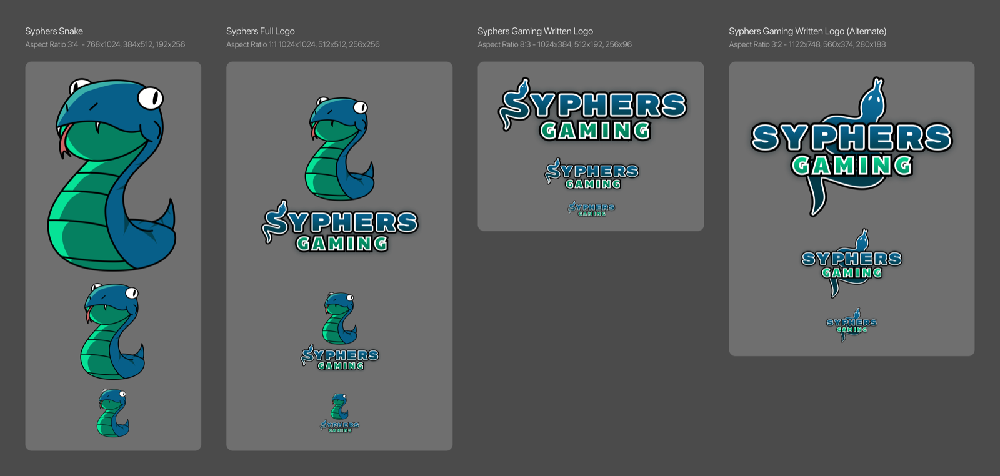
The logo style guide. 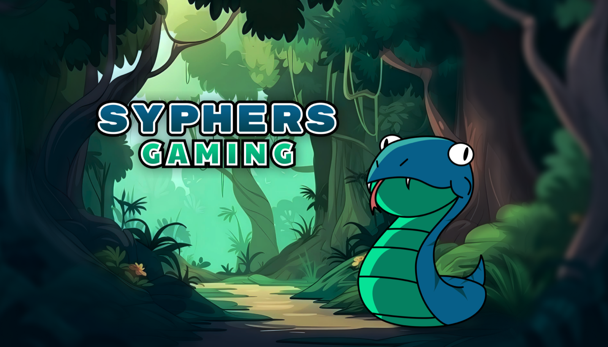
The new server banner. Custom emoji
Discord supports custom emoji, so we worked out a few options that extend the mascot's personality into everyday chat.
The custom emoji.